Load Semantic Segmentation Results¶
A semantic segmentation model labels every pixel with a class, such as road, building or sky, and does not separate two people standing side by side. Models return this as one dense map of shape (H, W) that holds a class id per pixel. supervision turns that map into sv.Detections with one detection per class present in the image by default. Each detection has a mask over every pixel of its class, the tight box around that mask and the class name in detections.data["class_name"].
For a side-by-side comparison of several models on one image, see the semantic segmentation cookbook.
Load a Result¶
Open the image, then load the model's result.
import supervision as sv
from PIL import Image
pil_image = Image.open("<SOURCE_IMAGE_PATH>").convert("RGB")
image = sv.pillow_to_cv2(pil_image)
A semantic model served by Roboflow Inference, such as an RF-DETR semantic model, returns the class map as a base64-encoded PNG together with the class names and a per-pixel confidence map. from_inference recognises the result and reads all three, the same call as for detection and instance segmentation models.
YOLO26 semantic segmentation models return the class map in Results.semantic_mask. from_ultralytics gives one detection per class present, without confidence.
Post-process the logits into a class map at the image size, then pass it with the model's id2label. from_transformers keeps every class, including class 0.
import torch
from transformers import AutoImageProcessor, SegformerForSemanticSegmentation
name = "nvidia/segformer-b2-finetuned-ade-512-512"
processor = AutoImageProcessor.from_pretrained(name)
model = SegformerForSemanticSegmentation.from_pretrained(name)
inputs = processor(images=pil_image, return_tensors="pt")
with torch.no_grad():
outputs = model(**inputs)
class_map = processor.post_process_semantic_segmentation(
outputs, target_sizes=[pil_image.size[::-1]]
)[0]
detections = sv.Detections.from_transformers(class_map, id2label=model.config.id2label)
A raw map loads directly with from_semantic_segmentation. It takes an (H, W) integer array or tensor, or a base64-encoded PNG string without a data-URI prefix. Name the classes with class_map, a dict from class id to name; a class missing from it is named by its id.
Split a Class into Separate Patches¶
By default every pixel of a class shares one detection, even when the class shows up in several places. Three lakes become one water detection whose box spans the land between them and whose area adds the lakes together, so len(detections) counts classes, not lakes.

Call from_semantic_segmentation directly with split_components=True to get one detection per 8-connected patch. Each patch keeps its class name and gets its own mask, tight box, area and, when a confidence map is present, mean confidence. Pixels that touch only at a corner belong to the same patch.
import numpy as np
import supervision as sv
label_map = np.array([[1, 1, 0, 1]], dtype=np.uint8)
names = {1: "water"}
merged = sv.Detections.from_semantic_segmentation(label_map, class_map=names)
patches = sv.Detections.from_semantic_segmentation(
label_map, class_map=names, split_components=True
)
assert merged.area.tolist() == [3]
assert patches.area.tolist() == [2, 1]
Keep the default when you want per-class coverage, such as the share of the image that is sky. Split when each patch is a thing to count or measure, such as flooded areas or fields.
Two limits follow from how semantic maps work. Objects of the same class that touch stay one patch, because the model never separated them. And there is no minimum patch size, so a stray pixel of noise becomes its own detection. Drop small patches by filtering on area:
Choose What Counts as Background¶
from_semantic_segmentation leaves out class id 0 by default, because models served by Roboflow Inference use it for background. from_inference uses the same default.
The following examples use label_map and names from the Class map tab above.
# keep every class, for a model whose id 0 is a real class such as `wall`
detections = sv.Detections.from_semantic_segmentation(
label_map, class_map=names, background_id=None
)
# leave out another id instead, such as an "unlabeled" class
detections = sv.Detections.from_semantic_segmentation(
label_map, class_map=names, background_id=255
)
from_transformers keeps every class, including id 0. For multiclass models, from_ultralytics keeps IDs listed in Results.names and skips unnamed IDs. For single-class models, it keeps only foreground map value 1, drops background value 0, and reports foreground as detection class id 0. Check each model's class-name mapping before comparing results rather than assuming a fixed offset between class ids.
Read the Confidence¶
When the result carries a per-pixel confidence_mask, as an Inference result does, each detection's confidence is the mean of that map over its mask pixels, divided by 255. This covers the whole class by default and one patch with split_components=True. Without a confidence map, confidence is None.
Pass a map of your own as confidence_mask, an 8-bit array or PNG with the same shape as the class map, to override the one in the result.
if detections.confidence is not None:
for name, confidence in zip(detections["class_name"], detections.confidence):
print(f"{name}: {confidence:.2f}")
Annotate the Result¶
Each detection is an ordinary row of sv.Detections, so the usual annotators apply. A class often wraps around other classes, so put its label at the centre of mass of its mask rather than at a corner of its box.
mask_annotator = sv.MaskAnnotator(opacity=0.6)
label_annotator = sv.LabelAnnotator(text_position=sv.Position.CENTER_OF_MASS)
annotated_image = mask_annotator.annotate(image.copy(), detections)
annotated_image = label_annotator.annotate(annotated_image, detections)
Annotators pick a colour from the class id. Two models that number the same classes differently give different colours, so pass custom_color_lookup with ids that agree across models to compare them.
detections.area gives the pixel count of each mask. That count covers the whole class by default and one patch with split_components=True.
Keep Memory Low with Compact Masks¶
A dense mask array holds one (H, W) boolean frame per detection. On a large image with many classes or patches, pass compact_masks=True to get a CompactMask built one detection at a time. It decodes to the same pixels as the dense array; see Use Compact Masks. This example also uses label_map and names from the Class map tab above.
detections = sv.Detections.from_semantic_segmentation(
label_map, class_map=names, background_id=None, compact_masks=True
)
Workflows Output¶
A Roboflow Workflows semantic segmentation step does not return a raw result. At the time of writing, its output is already sv.Detections with mask set to None and each class's mask stored as COCO RLE in detections.data["rle_mask"], so it does not go through from_semantic_segmentation. Calling the Inference HTTP API directly returns the raw result described above.